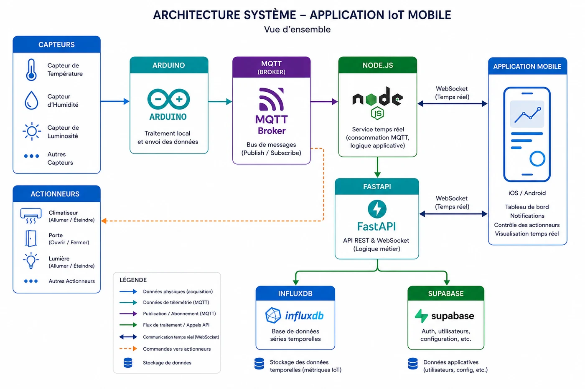
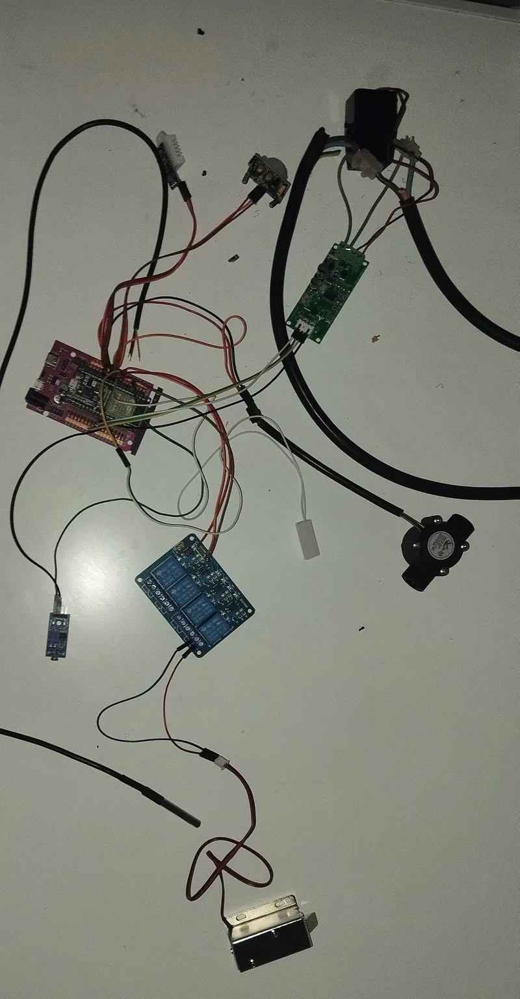
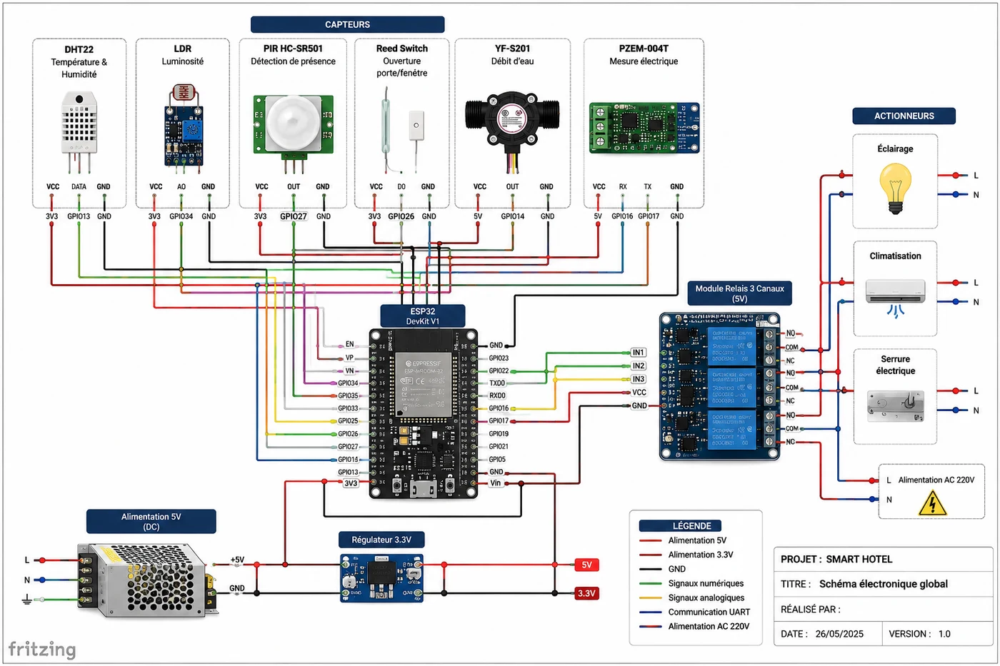
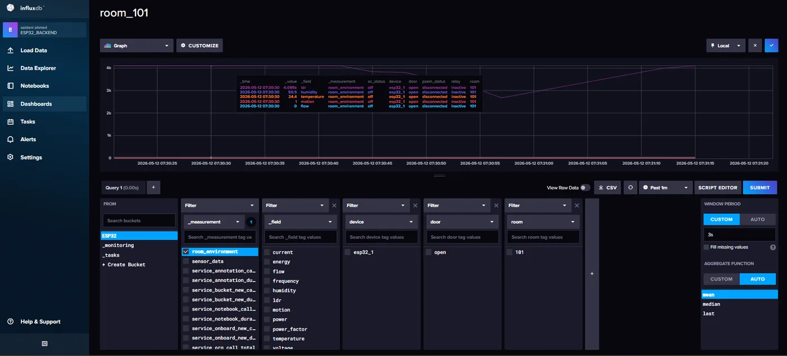
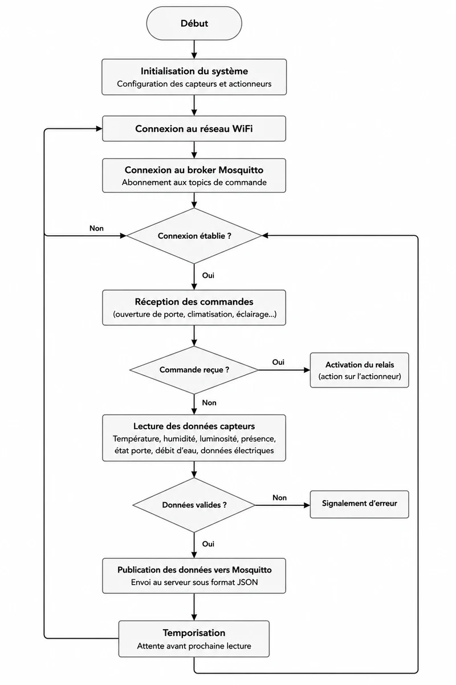
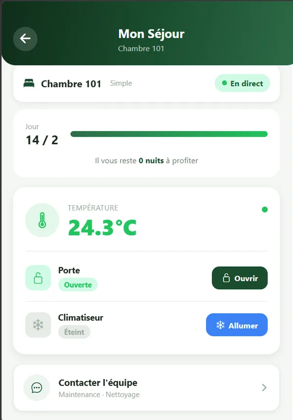
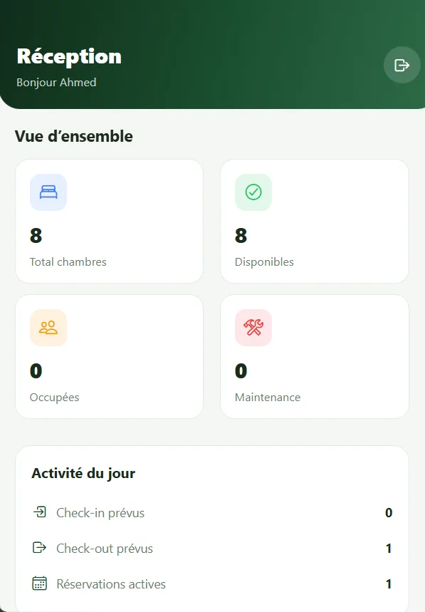
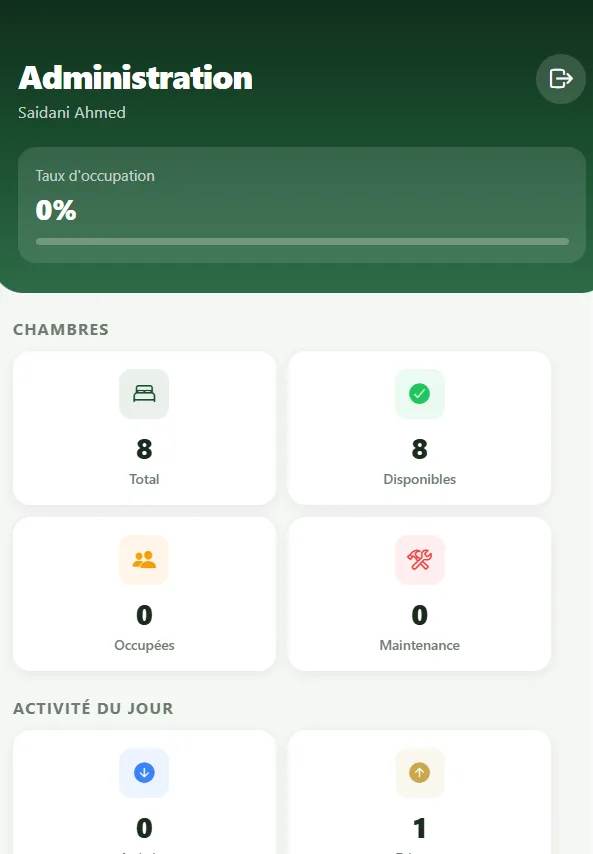
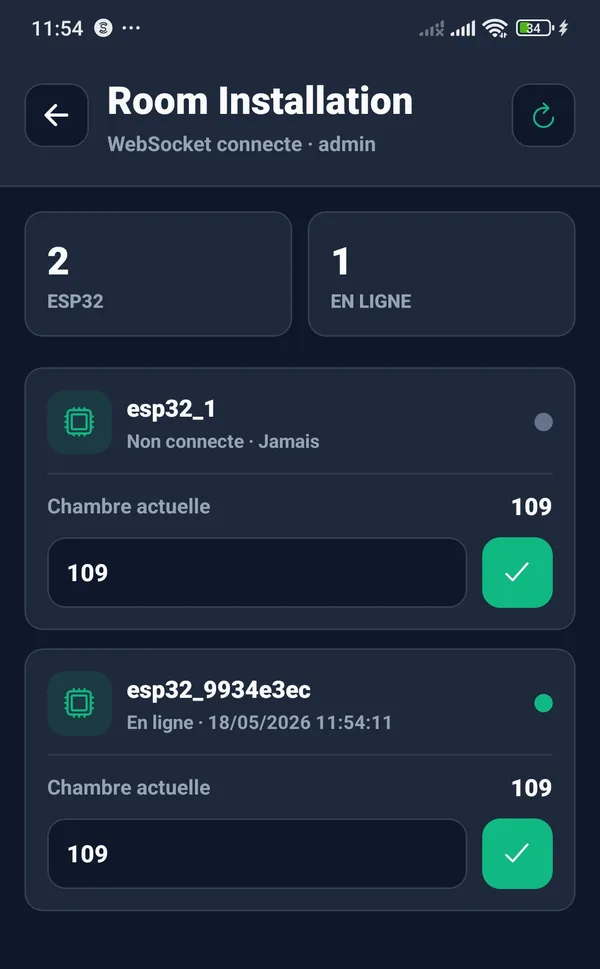

Smart Hotel : système intelligent de gestion hôtelière
Smart Hotel: an intelligent hotel management system
Une chambre d'hôtel connectée de bout en bout : un ESP32 lit six capteurs et pilote trois relais, les mesures remontent en MQTT jusqu'à une application mobile qui les affiche en temps réel.
An end-to-end connected hotel room: an ESP32 reads six sensors and drives three relays, and measurements travel over MQTT to a mobile app that displays them in real time.
Des chambres que personne ne surveilleRooms nobody is watching
Dans un hôtel classique, les demandes de ménage et de maintenance passent par téléphone, et personne ne suit en continu la température, l'eau ou l'électricité d'une chambre. Les pannes ne sont découvertes qu'après la réclamation du client.
In a conventional hotel, housekeeping and maintenance requests go through the phone, and nobody continuously tracks a room's temperature, water or electricity. Faults are only discovered after a guest complains.
Une plateforme, cinq rôlesOne platform, five roles
Une application mobile unique relie le client, la réception, le ménage, la maintenance et l'administration. Chaque chambre embarque un ESP32 qui remonte ses mesures et exécute les commandes : éclairage, climatisation, serrure.
A single mobile app connects the guest, reception, housekeeping, maintenance and administration. Each room carries an ESP32 that reports its measurements and executes commands: lighting, air conditioning, door lock.
Architecture
Le système sépare deux flux. Le flux IoT transporte les mesures des capteurs jusqu'à l'écran ; le flux métier gère les réservations, les séjours et les tâches du personnel.
The system separates two flows. The IoT flow carries sensor measurements to the screen; the business flow handles bookings, stays and staff tasks.

EmbarquéEmbedded
Firmware ESP32 écrit en C/C++ avec Arduino IDE : lecture des capteurs, connexion Wi-Fi, publication JSON, réception des commandes.
ESP32 firmware written in C/C++ with the Arduino IDE: sensor reading, Wi-Fi connection, JSON publishing, command handling.
Communication & donnéesMessaging & data
Broker Mosquitto en publication/abonnement, passerelle Node.js, séries temporelles dans InfluxDB, diffusion temps réel en WebSocket.
Mosquitto broker in publish/subscribe mode, Node.js gateway, time series in InfluxDB, real-time streaming over WebSocket.
Backend & mobileBackend & mobile
API REST FastAPI pour l'authentification, les réservations et les tâches ; données métier dans Supabase ; application React Native avec Expo.
FastAPI REST API for authentication, bookings and tasks; business data in Supabase; React Native app built with Expo.
Matériel et câblageHardware and wiring
| ComposantComponent | BrochePin | RôleRole |
|---|---|---|
| DHT22 | GPIO 13 | Température et humiditéTemperature and humidity |
| LDR | GPIO 34 | Luminosité (analogique)Light level (analog) |
| YF-S201 | GPIO 14 | Débit d'eau par impulsionsWater flow by pulses |
| PIR HC-SR501 | GPIO 27 | Détection de présencePresence detection |
| Reed switch | GPIO 26 | Ouverture porte / fenêtreDoor / window opening |
| PZEM-004T | GPIO 16 / 17 | Mesures électriques (UART)Electrical measurements (UART) |
| Relais éclairageLighting relay | GPIO 25 | Commande de l'éclairageLighting control |
| Relais climatisationA/C relay | GPIO 33 | Commande de la climatisationAir conditioning control |
| Relais serrureLock relay | GPIO 32 | Serrure électrique 12 V12 V electric lock |
Le module relais isole l'ESP32 des charges de puissance. Les capteurs sont alimentés en 3,3 V ou 5 V selon leur fiche technique.
The relay module isolates the ESP32 from the power loads. Sensors are powered at 3.3 V or 5 V according to their datasheets.


Ce que fait l'ESP32What the ESP32 does
- Au démarrage : configuration des broches, connexion Wi-Fi, connexion au broker Mosquitto et abonnement aux topics de commande.
- En boucle : reconnexion automatique si le réseau tombe, exécution des commandes reçues (porte, climatisation, éclairage), lecture périodique des capteurs.
- Les mesures sont validées, sérialisées en JSON puis publiées sur le topic de la chambre.
- Chaque étape a été testée séparément : capteurs seuls, intégration sur l'ESP32, puis transmission jusqu'au système central.
- At boot: pin configuration, Wi-Fi connection, connection to the Mosquitto broker and subscription to command topics.
- In the loop: automatic reconnection if the network drops, execution of received commands (door, A/C, lighting), periodic sensor reading.
- Measurements are validated, serialised to JSON and published on the room's topic.
- Each stage was tested separately: sensors alone, integration on the ESP32, then transmission to the central system.


L'application mobileThe mobile app




Démo vidéoVideo demo
Pistes d'améliorationNext steps
- Notifications push pour alerter le personnel en cas d'anomalie.
- Tableau de bord web pour l'administration générale de l'hôtel.
- Analyses prédictives sur la consommation et la maintenance à partir des données collectées.
- Push notifications to alert staff when an anomaly occurs.
- A web dashboard for overall hotel administration.
- Predictive analysis of consumption and maintenance from the collected data.
Essayez la chambre 101Try room 101
Une simulation du tableau de bord tourne dans votre navigateur : capteurs, relais et messages MQTT.
A simulation of the dashboard runs in your browser: sensors, relays and MQTT messages.